长脖子大嘴鸭的完整聊天装备。128 × 128 · 透明底 · 无限循环
显示 24 / 24 款 · 有字版 · 点击图片可保存 GIF
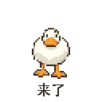
被叫到、上线、加入聊天
缩着脖子待机 → 长脖子弹出 → 举翅打招呼 → 脖子回弹
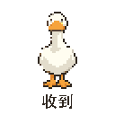
确认、答应、回应任务
一本正经立正 → 翅膀敬礼 → 脖子弹直 → 满脸认真点头
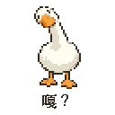
没听懂、疑惑
歪头左看右看 → 眼睛瞪圆 → 死鱼眼
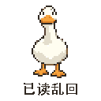
敷衍接话
认真点头 → 仰头乱嘎 → 闭眼满意
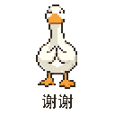
接受帮忙、感谢、收礼
双翅合拢 → 弯脖子鞠躬 → 嘴几乎碰脚 → 抬头再谢
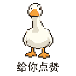
夸人、赞同、给鼓励
认真端详 → 翅膀举到胸前 → 巨大羽毛拇指 → 连点两下
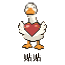
撒娇、亲近、安慰
张开小翅膀 → 搂住大爱心 → 脖子贴住爱心 → 满足蹭蹭
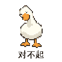
道歉、认错、求原谅
缩头低眉 → 双脚内八 → 翅尖互戳 → 偷偷抬眼
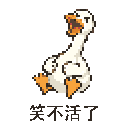
看到离谱笑话、爆笑
捧腹仰头 → 笑到后倒 → 蹬脚飙泪 → 侧躺捶地
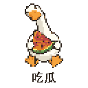
围观八卦、等后续
抱瓜坐好 → 嘴一张吞一角 → 鼓腮咀嚼 → 斜眼等后续
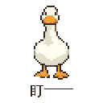
催回复、审视、默默施压
面无表情站着 → 脖子向前探 → 大嘴贴近 → 单眼慢眨
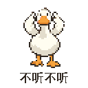
装听不见、拒绝劝说
双翅捂耳 → 大嘴闭紧 → 头左甩 → 头右甩
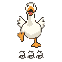
催促、等不及、急眼
急到跺左脚 → 长脖子拧向左 → 跺右脚 → 拧向右
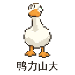
焦虑、工作压力
脖子缩短 → 捧脸冒汗 → 缓一口气
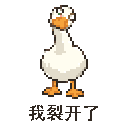
崩溃、被打击
长脖子失去支撑 → 身体下沉 → 瘫成鸭饼
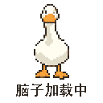
懵了、没反应过来、思考卡住
呆滞 → 长脖子弯成环 → 眼珠转圈 → 还没加载好
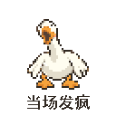
情绪爆发
翅膀乱拍 → 脖子歪掉 → 大嘴嚎叫
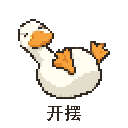
躺平、懒得动
肚子朝上躺倒 → 双脚翘起 → 悠闲左右摇
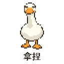
得意、胜券在握
半眯眼挑眉 → 翅尖一捏 → 装淡定
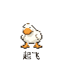
兴奋、得意、事情顺利
蹲下蓄力 → 蹼脚喷火 → 火箭鸭腾空 → 空中得意
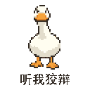
嘴硬、解释
伸脖子争辩 → 大嘴张到最大 → 翅膀补充说明
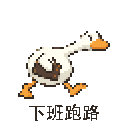
下班、告辞、急着走
夹包起步 → 长脖子前伸 → 双脚风火轮 → 一路狂奔
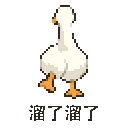
告辞、退出话题
背身摇屁股 → 交替迈脚 → 回头偷看
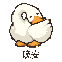
结束聊天、睡觉
长脖子盘回身体 → 嘴塞进翅膀 → 身体呼吸起伏 → 睡泡缩放